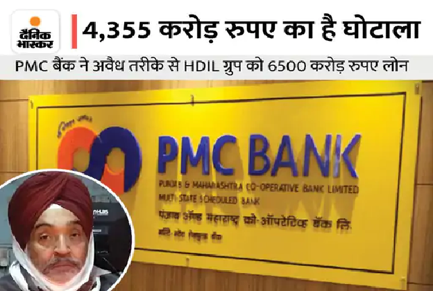

CURRENT-AFFAIRS FEB 4, 2022
1. Killed ISIS chief Abu Ibrahim, blew himself up with family

Damascus: There is an atmosphere of unrest in Syria. Meanwhile, the US has said that the head of the Islamic State group, Abu Ibrahim al-Hashimi al-Quraishi, was killed in a US Special Forces attack in Atmah, Syria. US President Joe Biden issued a statement giving this information.
Baghdadi had taken command
Abu Ibrahim al-Hashimi al-Quraishi was targeted in this US force attack. He took over the reins of the terrorist organization on 31 October 2019 after Abu Bakr al-Baghdadi was killed in an American attack in the same area. A US official said that al-Qureshi died in the same way as Baghdadi had killed himself and his family members when American troops arrived.
13 people killed in the blast
Witnesses said US special forces landed in an area held by rebels in Syria and attacked a house. He clashed with the rebels for 2 hours. The town of Atmah, located on the Turkish border, was shaken by firing and explosions. According to the information received, 13 people including 6 children and 4 women have been killed in this attack.
2. Political game in Olympic Games: Imran needs loan from Beijing, Putin is showing friendship; Jinping desperate to show political power

The opening ceremony of the Winter Olympics is to be held in Beijing, the capital of China. The heads of state of 32 countries have reached China for this occasion. The purpose of joining all of them is different. Some have reached Beijing as a friendship with China, while some have come to support it against the American bloc.
Pakistan Prime Minister Imran Khan has also reached Beijing with his Lashkar, but the purpose of reaching here is to ask for a loan. Imran Khan will be on a visit to China from February 3 to 6. During this time he wants a loan of $ 3 billion from Beijing. Let us tell you that this year has been 70 years since the establishment of diplomatic relations between the two countries.
In this visit of Imran, along with investment in Pakistan, the problems being faced in the China Pakistan Economic Corridor (CPEC) will also be discussed. However, it is not yet decided whether Xi Jinping will meet Imran Khan separately or not.
Jinping ready to show political power
On the pretext of the Olympics, Chinese President Xi Jinping also does not want to leave any opportunity to show his political power. The US, Australia, Britain and Canada have boycotted it diplomatically. In such a situation, China is busy sending a message to the world from the Winter Olympics on the recent Ukraine crisis and Taiwan issue.
3. Russia wrote the film script of the war: US alleges - Russia prepared a fake video so that Ukraine could blame the genocide of Russian speakers
The war of words between Russia and America is also going on amid the ongoing tension on the eastern border of Ukraine. Both the countries are accusing each other. Meanwhile, US officials have claimed that Russia has prepared a fake video of the attack on Ukraine. Its purpose is to falsely accuse Ukraine of genocide of Russian-speaking people living in its territory and drone attacks on the Russian border.
US officials said - this video can be used in two ways. First, it will be described as a response to the video when outrage against Ukraine flares up. Second, it can also be said that the separatists have appealed to Russia for help to avoid Ukrainian attack. That would give him an excuse for military intervention.
no proof of video
No evidence of this claim has been presented by the US. On this, officials say that doing so may endanger its source. The Russian government has been engaged in spreading conspiracy through social media and state media since November. A British officer also told that according to the information we have received, Russia is making up false excuses to attack Ukraine.
In the video prepared by Russia, the mutilated corpses of Russian people will be shown after the blast. The video will also reveal that the Ukrainian military used Turkey's Bayraktar TB2 drone for the attack. For this, fake Ukrainian military equipment, Turkish drones and Russian-speaking actors were included.
4. Inside Story of Galwan: Chinese soldiers panicked, washed away in river while retreating; This information was on Chinese social media
The Australian newspaper The Klaxon reported in its report on 2 February that 42 Chinese soldiers were killed in the Galwan violence of June 2020. Whereas China has claimed the death of only 4 soldiers. It has been told in the report that the Chinese soldiers were nervous while fighting with the Indian Army. One by one, 38 Chinese soldiers were washed away in the Galwan river in a hurry to retreat.
Anthony Klan, editor of The Klaxon, told NDTV in an interview – Indian soldiers had gone to find out whether Chinese soldiers had removed their camps from the buffer zone. During this, the soldiers of both the army clashed with each other and this accident happened. There is evidence of this also. All this information was available on China's first-hand social media accounts, which were later removed.
Chinese soldiers attacked deceitfully
The Claxon said in its report – On June 6, there was an agreement between India and China that both the armies would withdraw from the buffer zone. Colonel Santosh Babu of the Indian Army and his soldiers had gone to the disputed area on June 15 to clear Chinese encroachment. Colonel Qi Fabao of the PLA was present here with about 150 soldiers. Instead of retreating, he started fighting.
Chinese soldiers used steel pipes, sticks and stones to attack Indian soldiers. During this, a soldier of the Indian Army attacked Colonel Fabao on the head, after which he panicked and fled. Seeing the bodies of many of its officers, the PLA soldiers were so terrified that they jumped into the icy river without wearing water-proof clothes. They were washed away due to sudden rise in the level of the river.
5. Earth's new friend in space: Astronomers discovered 1.2 km long Trojan asteroid, will revolve around the Sun for 4000 years

Astronomers have discovered an asteroid that has been revolving around the Sun with the Earth for thousands or millions of years. With this discovery, the Earth has found a new neighbor in space. This 1.2 kilometer wide asteroid is being called 'Trojan asteroid'. According to estimates, it will continue to revolve around the Sun on the path of the Earth for at least 4,000 years.
Astronomers are excited after this discovery made with the help of a state-of-the-art telescope in Chile. And he is busy detecting more such possible asteroids.
Astronomers believe that until now it was thought that the Earth revolves around the Sun alone in its orbit. This was true until now. But, this will not be the case for thousands of years ahead. Because, we earthlings have found a new neighbor. It has been named- 2020 XL 5. It is a Trojan asteroid. The people of the earth did not know much about this till now.
This 'Trojan Asteroid' is also revolving around the Sun in its orbit along with the Earth. Such asteroids are found in the region of Mars and Jupiter, but are also present in such a large size near Earth, this has been revealed for the first time.
Largest asteroid ever found
This asteroid is located 60 degrees ahead of Earth. According to the Institute of Cosmos Sciences of the University of Barcelona, it is the largest asteroid ever found. The discovery has been published in the journal Nature Communications. Many planets in the Solar System are known to have 'Trojan Asteroids', but this is the second 'Trojan Asteroid' found near Earth.
Trojans sharing an orbit with a planet are called
The lead author of the research, Arthur Cesar Brissano, has said that 'Trojans are objects sharing an orbit with a planet. Which are located in Lagrange point, balancing with the orbit of the planet. Lagrange point is the distance at which the effect of gravity on any object remains the same. Because of this the object becomes stationary.
6. US air strike in Syria: Biden said - we killed ISIS commander Ibrahim al-Hashmi; Officer's claim - he blew himself up with a bomb
President Joe Biden's statement has come on the US Special Forces air strike in Syria. According to Biden - Islamic State commander Ibrahim al-Hashmi al-Qureshi was killed in the air strike.
Initially, there was news of 13 civilians being killed in this attack. Then came Biden's statement. However, the New York Times is telling a different story. In his report, he quoted a senior Biden administration official as claiming that Ibrahim had been killed, but he became a victim of his own bomb and during this his wife and children were also killed.
What did Biden say?
US President said- Salute to the bravery of our soldiers. We killed Abu Ibrahim al-Hashemi on the battlefield. He was the leader of ISIS. After the operation, all American soldiers safely returned to their base.
According to the information, this operation carried out in northern Syria was carried out by 24 American commandos who arrived by helicopter. Reaper drones were also used during this. A similar operation was done in 2019. In this, ISIS leader Abu Bakr al-Baghdadi was killed.
According to the news of the Washington Post, the civil defense group White Helmets working in Syria has informed that they have so far removed 13 bodies from the scene. These include the bodies of 6 children and 4 women. The group also reported that they treated the wounds of a young girl whose entire family died in the attack.
Helicopters landed in Idlib province at 1 pm
Citizens of northern Idlib province said they heard the sound of helicopters at around 1 p.m., followed by gunshots. American commandos landed in Syria's Atmeh by helicopter after midnight. This village is located on the border of Turkey. Here they surrounded and attacked a house.
People were asked to vacate the houses
The Syrian Observatory for Human Rights and US analysts analyzing social media reports from Syria said women and children were asked to vacate homes over loudspeakers, according to the New York Times report. About two hours later, American commandos launched the mission. The army fired grenades at the house, after which the terrorists present in the house retaliated. A long fight ensued from both the sides.
During the operation, an American helicopter suffered a technical fault, due to which it was forced to land. It was later destroyed by American attack aircraft. In the night itself, American commands and other helicopters flew from there.
7. Stock Market: Sensex rises 50 points to 58900, IT stocks fall more, Tata Steel rises 3%
The stock market is bullish today. The Bombay Stock Exchange (BSE) Sensex has risen 50 points to 58,900. Shares of IT companies are trading down.
Market was open up 130 points
The Sensex opened today at 58,918, up 130 points. It made a high of 58,935 and a low of 58,475 in the first hour. Out of its 30 stocks, 9 are in gains and 21 are in decline. Among the major losers, Wipro is down 2% while Infosys, TCS, HCL Tech and Tech Mahindra have fallen more than 1-1%.
Reliance shares also down
The country's largest company Reliance Industries, Hindustan Unilever, Kotak Bank, Axis Bank, Dr. Reddy, Maruti, Bajaj Finserv, Titan and Airtel are also in decline. Major stocks to rise are ITC, Tata Steel, Sun Pharma, PowerGrid, IndusInd Bank, HDFC Bank and SBI.
214 Shares in Upper Circuit
214 shares of Sensex are trading in upper and 85 lower circuits. This means that in a day these stocks can neither fall nor rise above a certain limit. The market cap of the listed companies is Rs 267.98 lakh crore as against Rs 268.25 lakh crore yesterday.
Nifty up 20 points
On the other hand, the Nifty of the National Stock Exchange is trading 20 points higher at 17,570. It opened at 17,590 and made an upper level of 17,593 and a low of 17,480. Its Next 50, Nifty Financial and Nifty Bank indexes are bullish. Midcap index is down.
8. Prime accused of PMC bank fraud arrested: The director of the bank was trying to escape to Canada via Nepal, was caught at Raxaul border
One of the main accused in the Rs 4,355 crore scam involving Punjab and Maharashtra Co-operative Bank (PMC) bank director Daljit Singh Bal has been arrested from Raxaul border in Bihar. Singh was trying to escape to Canada via Nepal, but while escaping from the country, the team of the Immigration Department caught him late on Wednesday evening. His arrest has been informed to the Economic Offenses Wing (EOW) of Maharashtra Police.
Let us tell you, the EOW team of Maharashtra Police is investigating this scam exposed in 2019. Daljit Singh Bal was wanted in this case, but he was still absconding by dodging the investigating agency.
Reached unabated from Maharashtra to Raxaul border
During interrogation, Daljit has told that leaving the country, he was trying to flee Canada via Nepal. Raxaul border was easily accessible from Maharashtra. Just 200 meters before entering Nepal, the officials of the Immigration Department took him into their custody. If sources are to be believed, the EOW team has reached Patna. However, no official is saying anything in this matter.
Scam came to the fore in 2019
In 2019, loan fraud and scam came to the fore. After this RBI dissolved the board of PMC Bank. Along with this, RBI had banned the withdrawal of money from the bank. Many senior officials of the bank were found involved in this fraud and scam. The bank did not give correct information to the RBI about the loan given to the real estate company HDIL. There are allegations of scam in this loan also.
HDIL was given loan
PMC Bank had illegally given a loan of Rs 6500 crore to HDIL Group, which was 73% of the total loan book size of the bank at Rs 8880 crore in September 2019. The bank's deposits stood at Rs 11,617 crore in March, 2019. Former MD of PMC Bank Joy Thomas and former chairman Waryam Singh were arrested by the Economic Offenses Wing of Mumbai in October last year.
PMC has 137 branches in 7 states
PMC is Urban Co-Operative Bank. It has operations in Maharashtra, Delhi, Karnataka, Goa, Gujarat, Andhra Pradesh and Madhya Pradesh. It has 137 branches.
9. Income Tax Slab: No change in income tax slab, no relief to middle class
New Delhi. Union Budget 2022 India: Union Finance Minister Nirmala Sitharaman made several announcements during the budget in Parliament. However, no relief of any kind was announced regarding the Income Tax Slab Update. Before the budget, it was expected that the government may change the tax slab. But the common man has not got any relief regarding this. The government has not made any change in the income tax slab. Whereas, the corporate tax has been reduced from 18% to 15%.
Will get 2 years time to rectify the mistake in ITR
Finance Minister Sitharaman has said that 2 years will be given to rectify the error in ITR. It has been announced to reduce the corporate tax from 12 percent to 7 percent. The Finance Minister said that the process of reforming the tax system will continue. He said that the government is planning to bring new tax reforms. The government has also made a provision of imprisonment up to 2 years for falsification in ITR.
Income tax exemption limit was increased 8 years ago
The common man got exemption in income tax 8 years ago from today. In the year 2014, the government increased the income tax exemption limit from Rs 2 lakh to Rs 2.5 lakh. At the same time, the tax exemption limit for citizens in the age group of 60 to 80 years was increased from Rs 2.5 lakh to Rs 3 lakh. It was believed that in this year's budget, the common man can get exemption in income tax. But this did not happen.
30% tax on earnings from cryptocurrencies
The Finance Minister has said that income from virtual digital assets will be taxed at 30 percent. That is, cryptocurrencies will also come under the tax net and income from cryptocurrencies will be taxed at 30 percent. Custom duty on cut and polished diamonds and gems will be reduced to 5%. But the common man has not got any relief on the income tax front in this budget and no change has been made in the income tax slab. This clearly means that there will be no savings on the capital which is known to the tax.